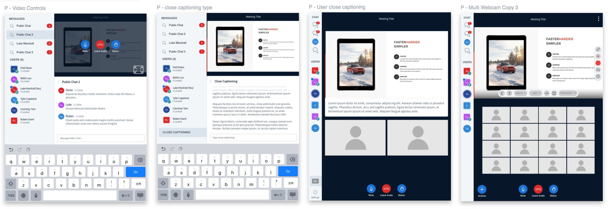

courtney
courtney tam case
studies contact
High fidelity design of the presenter screen.
Problem Definition
Original BigBlueButton design
Proposed Solution
Standard presenter display (left), presenter window with chat open (right)
Target Audience
Viewer
Presenter
UX Goals
Approach
1. Customer Clinics
2. Design Critiques
Collaboration design session to improve the product
3. Designing for the Office Ecosystem
Designing for Multiple Devices
Landscape tablet designs
Portrait tablet designs
Mobile designs
Designing for Multiple Videos
Multiple video layout design explorations
An additional function we added to the system was a “Raise hand” function. This was a notification feature that allowed students to notify the lecturer that a question needed to be asked; much like in an in-class lecture setting. By doing this, we can ensure questions were not lost in the chat window even with 50+ participants.Looking Back